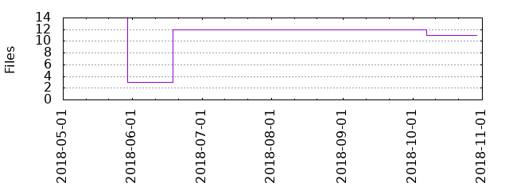

Files
General
Activity
Authors
Files
Lines
Tags
Total files
11
Total lines
921
Average file size
3571.27 bytes
File count by date

Extensions
Extension
Files (%)
Lines (%)
Lines/file
4 (36.36%)
831 (90.23%)
207
cfg
1 (9.09%)
2 (0.22%)
2
md
1 (9.09%)
18 (1.95%)
18
yml
5 (45.45%)
66 (7.17%)
13